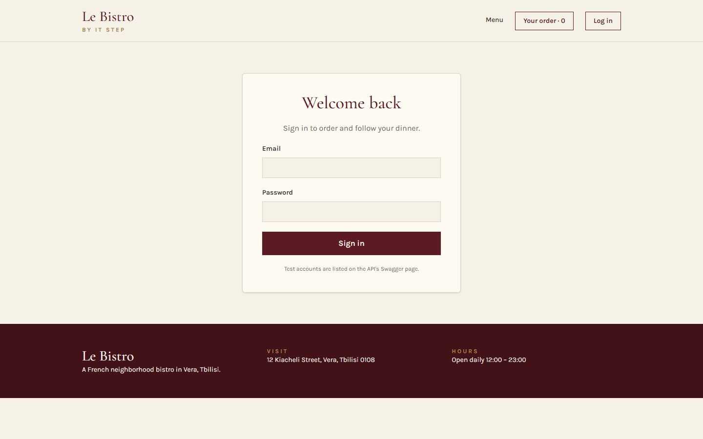
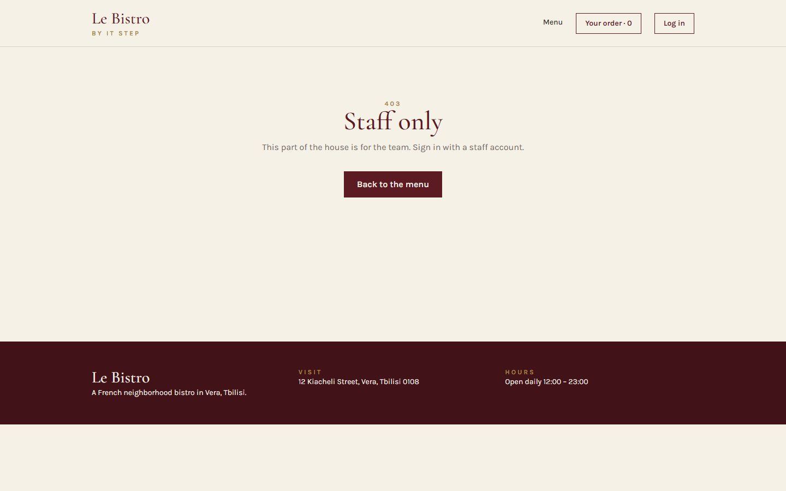

Bonjour!
L30 React · lecture 5 · Le Bistro track 4 of 5
La
maison
Routing, login and protected pages. A house has rooms with their own doors, and some doors are for the staff only.
- Theme
- React Router, auth, guards
- Le Bistro today
- Pages, a dish page, login
- Your project
- v0.4 · pages and a login
- Length
- 2 hours · one break
Le Bistro · L30 · 120 minutes
Today's menu
- AccueilHello where Le Bistro is today3′
- ApéritifQuestions and two homework demos8′
- EntréeProblem 1 send me the link5′
- PlatReact Router pages, layouts, params24′
- AtelierClasswork 1 your pages15′
- Pause caféBreak music on, screens off10′
- Second platProblem 2, login and guards staff only27′
- AtelierClasswork 2 with AI prompt it, then check it15′
- MasterclassOne prompt, the whole Le Bistro CRAFT, then the short version8′
- DessertWrap-up recap, homework, next time5′
Route Lecture 4 of 5
Le Bistro, lecture by lecture

L27 · done
Components
Home page and menu from components and a data file.

L28 · done
State
Add to cart works. Chips filter, search finds.

L29 · done
Effects
The real menu from the API. A cart that survives a refresh.

L30 · today
Routing
Pages with their own address. Login and staff-only doors.

L31
Context
One cart and one session for the whole site.
Today's goal Press next to unveil it
From one long page to a house of rooms
Under the blind: Coq au Vin on its own page, at its own address.
/menu/5opens Coq au Vin, Back works/menu?category=drinkscan be shared- A login;
/accountand/kitchenare locked
After today
Apéritif Before we start
Questions from last time?
Effects, dependencies, cleanups, custom hooks.
When does useEffect(fn, [category]) run?
After the first render, and after every render in which category changed.
What is a cleanup for?
To cancel what the effect started: abort a request, clear a timer, remove a listener. It runs before the next effect and at the end.
Do two components calling useApi share data?
No. Hooks share logic, not state. Each caller gets its own.
Homework check Two volunteers, two minutes each
Show us your v0.3
Open DevTools → Network. Click a category, type a search, press F5.
Look for
- Products from DummyJSON, no data file
- A skeleton while loading, a message offline
- One request per search, not per letter
- The cart survives F5
- No missing-dependency warnings
Entrée · Problem 1 Before the new tool
“Send me
the link to
Coq au Vin.”
A friend wants to see the dish before dinner. Our whole site lives at one address.
Problem 1 Try it
One address for everything
Copy the link
You get localhost:5173/: the home page, not the dish.
Press Back
You leave Le Bistro instead of going back to the menu.
Refresh
You land on the home page again, not where you were.
Problem 1 Your turn
What would we need?
Plat · Solution 1 Type an address and press Enter
The router reads the address, picks the page
Result
Routes are checked against the address. :id matches any one segment and hands it to the page as a param. * catches everything else: the 404 page.
Solution 1 Click the links in the frame
One frame, many pages: <Outlet />
The dashed hole
Header and Footer never change. <Outlet /> is where the current page goes.
Solution 1 · Recipe Type it with me
Install React Router and wrap the app
- Install itOne package:
react-router(version 8). - Wrap the app in BrowserRouterIt watches the address bar for the whole app.src/main.tsx
- Make a pages folderHomePage (Hero + Favourites), MenuPage (the old MenuSection).src/pages/
Solution 1 · Recipe The map of the house
The routes in App
- Routes and a layout routeThe layout wraps every page inside it.
- The index page
index= the address of the parent:/. - PathsNo leading slash inside a parent:
menu,menu/:id. - The catch-all
*matches anything else: the 404 page. - SiteLayout with an OutletHeader, the hole, Footer.src/layouts/SiteLayout.tsx
The pages still need the cart.
In the real App every page gets cart, onAdd, onChangeQty as props (see code/after-L30/src/App.tsx). Remember how many: that's the problem of L31.
Solution 1 Click both, and watch the cart
<Link>, not <a href>
<a href="/menu">
The browser loads the whole site again: a white flash, and all state in memory starts over.
<Link to="/menu">
The router changes the address and swaps the page. No reload, state kept.
Solution 1 · Recipe A page with a param
Coq au Vin at /menu/5
- Read the param
useParams()gives{ id: "5" }. A string, always.src/pages/DishPage.tsx - Find the dishThe API has no "one dish" endpoint: load the menu, find by
Number(id). - Loading, error, not foundA wrong id like
/menu/999shows the 404 page. - Link the cards to itThe photo and the name in DishCard become Links.DishCard.tsx
Solution 1 Click the chips, then Back
Filters in the address: useSearchParams
Where does this state live?
In the URL. It survives F5, it can be shared, and Back undoes it. useState for category and query is gone.
Solution 1 One file fixes it
Refresh on Vercel: 404
The first rule is the production twin of Vite's proxy: the deployed site asks Vercel for /api/…, Vercel asks the API.
Solution 1 The errors you will see today
When routing goes wrong
A Link outside the router
The layout forgot its Outlet
A param compared as a number
The old import
Quick check The router's eyes
Which page opens /menu/drinks?
menu/:id matches any one segment after /menu. DishPage then can't find a dish with that id and shows the 404 page itself. Filters belong in the query: /menu?category=drinks.
Atelier · Classwork 1 15 minutes, on your own project
Your pages
Routes and a layout
npm install react-router,<BrowserRouter>in main.tsx.- A layout with Header,
<Outlet />, Footer. - Routes:
/(home),/products,*(404). NavLinks in the Header.
A product page
/products/:idwithuseParamsandhttps://dummyjson.com/products/{id}.- Cards link to it.
Filters in the URL
- The category lives in
?category=withuseSearchParams.
Done when
- Every page has its own address
- Back and Forward work
- No full reload when you click a link
- A wrong address shows your 404
Stuck?
<Routes>
<Route element={<Layout />}>
<Route index element={<Home />} />
<Route path="products" element={<Products />} />
<Route path="*" element={<NotFound />} />
</Route>
</Routes>Pause café 10 minutes
Pause café
After the break: some doors are for the staff only.
Second plat · Problem 2 Every page now has an address
Staff
only.
Anyone can type /kitchen into the address bar. Guests must not see the kitchen's queue, and your account page is yours alone.
Problem 2 The house rules
Who may open which door?
| Page | Guest | Student · signed in | Kitchen · Waiter |
|---|---|---|---|
| /menu, /menu/5public | ✓ | ✓ | ✓ |
| /accountany signed-in user | ✗ → /login | ✓ | ✓ |
| /kitchenstaff only | ✗ → /login | ✗ → /forbidden | ✓ |
Solution 2 Press next, one message at a time
How a login works
1POST /api/v1/auth/login
body: { email, password }
200 { accessToken: "eyJhb…" }2
the password was right · the token lives 2 minutes
3GET /api/v1/auth/me
header: Authorization: Bearer eyJhb…
200 { displayName, role: "Kitchen" }4
who the token belongs to
Solution 2 · Recipe The form's submit handler
The login page
- Stop the browser's own submit
e.preventDefault(): no page reload.src/pages/LoginPage.tsx - Ask for a tokenPOST the email and password.
- Ask who we areThe token in the header, the role in the answer.
- Save the session, go backTo the page the guest wanted (
from), replacing the login in history. - A friendly errorAnd the button disabled while we wait.
Solution 2 · Recipe Who is signed in?
The session in App, the name in the Header
- A session state that survives F5
null= a guest. Our hook from L29.src/App.tsx - Login and logout are settersLoginPage gets
setSession, Header getslogout. - The Header changes with it"Log in" for guests; the name and "Sign out" for users; "Kitchen" for staff.Header.tsx
Solution 2 Pick a visitor and a door
The guard is a doorman
Visitor
Door
Solution 2 · Recipe The doorman as a component
RequireAuth and the locked routes
- A guest? To the login
<Navigate>redirects while rendering.state.fromremembers the door.src/routes/RequireAuth.tsx - The wrong role? Forbidden
rolesis optional: leave it out for "any signed-in user". - Otherwise, the page
<Outlet />: the guard is a layout route. - Wrap the routesOne guard per kind of door.src/App.tsx
Solution 2 The API's trap
The 2-minute token
Tokens of this API live 2 minutes, on purpose. Then every protected request answers 401.
Our answer
Show it kindly. "Sign in again" clears the session; the guard sends the guest to the login, which brings them back.
Solution 2 The most important security sentence of the course
A guard is a sign on the door, not a lock
The guard (React)
Hides pages from people who shouldn't see them. Nice for users. But the code runs in their browser: anyone can open DevTools and change it.
The lock (the API)
Checks the token and the role on every request: 401 without a valid token, 403 with the wrong role. That is the real protection.
Never put a secret in React code.
No admin passwords, no API keys, no "if (password === 'chef123')". Everything in the bundle is public.
Solution 2 Le Bistro, version 0.4
The house at the end of today


Full code: bistro-track/code/after-L30. Deploy it to Vercel: vercel.json is included.
Solution 2 The bugs of the second half
When auth goes wrong
Redirect without replace
Storing the password
A secret in the frontend
Forgetting the token
Quick check The doorman
A guest types /kitchen. Where do they land?
No session → the first check sends them to /login with from: "/kitchen". After a staff login they go back there. A signed-in student would get /forbidden instead.
Atelier · Classwork 2 · with AI 15 minutes, on your own project
Prompt it: a login and a guard
- BaseA
/loginpage with DummyJSON (/auth/login, then/auth/mefor the role); the session saved withuseLocalStorage; the name in the Header. - Plus
RequireAutharound/profile, and back to it after the login. - ProAn
/adminpage only for the admin role.
Your prompt, in five parts (CRAFT)
ContextYour shop, stack and react-router 8 ("import from react-router"). The two DummyJSON endpoints. Paste App.tsx and your layout.
Role"A React teacher who writes simple, safe code."
ActionThe Base task, then Plus in a follow-up prompt.
Format"Only the files that change, complete, with their paths."
Target"Tell me which part only hides a page and which part really protects it."
Done when
- Log in, F5: still signed in
- A guest on /profile lands on /login, then comes back
- No password stored, imports from
react-router - AI.md: your prompt and one thing you changed
A sample prompt · Fashion street
CONTEXT
My shop "Atelier" sells clothes. Vite + React 19 +
TypeScript + Tailwind 4, react-router 8 (import from
"react-router"). DummyJSON: POST /auth/login
{ username, password } -> accessToken;
GET /auth/me (Bearer) -> the user.
ROLE
A React teacher who writes simple, safe code.
ACTION
A /login page that signs in and saves { token, user }
with useLocalStorage, and shows the first name and
"Sign out" in the Header.
FORMAT
Only the files that change, complete, with their paths.
TARGET
Tell me which part only hides a page and which part
really protects it.Masterclass · LAB-30 Press next: the prompt opens part by part
Le Bistro so far, in one prompt
Contextwhat exists and what we use
Le Bistro, a French restaurant site. Vite + React 19 + TypeScript + Tailwind CSS 4,
react-router 8 (import from "react-router"). API at /api through a Vite proxy:
dishes, categories, search; POST /api/v1/auth/login { email, password } ->
accessToken (lives 2 minutes); GET /api/v1/auth/me -> the role.Rolewho answers
You are a senior React developer who writes code for beginners to read.
Actionwhat to build, step by step
Build the site as it is so far (real menu, saved cart, debounced search), now as pages:
- A layout with <Outlet />: /, /menu (?category= and ?q= in the URL), /menu/:id,
/login, /account, /kitchen, /forbidden and a 404.
- Login saves { token, user } with useLocalStorage; the Header shows the name.
- RequireAuth: guests go to /login and come back after it; /kitchen is only for
the kitchen and waiter roles. A 401 shows "Sign in again".
- vercel.json: /api to the API, every other address to index.html.Formatwhat the answer looks like
The route table first, then every file in full with its path.
Targetwho reads it, when it's done
Beginners will read it: one component per file. The guard is a sign, not a lock: no secrets in the code. It must pass npm run build.
Masterclass · LAB-30 The AI writes fast. You decide if it's right.
Run it, then check it
- Copy the prompt into an AI toolClaude, ChatGPT, Copilot Chat: any of them; nothing to attach: the data comes from the API
- Build what it gives backa new Vite project, every file pasted at its path
- Run
npm run devandnpm run buildan error message goes straight back into the chat - Compare with
code/after-L30the version we built by hand
Check it with what you learned today
- Imports from
react-router, notreact-router-dom <Link>inside the app, no<a href>Number(id)before comparing a param<Navigate … replace />in the guard,state.fromfor the way back- The token is stored, never the password
Most AIs still answer with react-router-dom and version 6 code. One look at the imports tells you.
Masterclass · LAB-30 The same five parts, without the labels
The short version
You're a senior React developer writing for beginners. Le Bistro is a Vite + React 19 + TypeScript + Tailwind 4 app with react-router 8 (import from "react-router") and an API at /api through a Vite proxy: dishes, categories, search, POST /api/v1/auth/login (a 2-minute token) and GET /api/v1/auth/me for the role. Build the real menu, the saved cart and the debounced search as pages in a layout with <Outlet />: home, /menu with its filters in the URL, /menu/:id, login, /account, /kitchen for the kitchen and waiter roles only, /forbidden and a 404; RequireAuth sends guests to /login and back, a 401 shows "Sign in again", and vercel.json rewrites /api and every other address. Give the route table first, then every file in full with its path. Keep one component per file and no secrets in the code, and make sure npm run build passes.
How CRAFT works
The five parts are a checklist for your thinking, not a form to fill in. Once all five are there, the labels can go: the prompt reads like a message to a colleague.
Dessert What we solved today
Two problems, two tools
Problem 1
One address for everything: no link to a dish, Back left the site.
React Router
Routes map addresses to pages. A layout frames them with <Outlet />. Link, params, search params.
Problem 2
Anyone could type /kitchen or /account.
Login and guards
A token from the API, a session that survives F5, RequireAuth with roles. The API is the lock.
Dessert Click a card to check yourself
What does this do?
Shows a page for /menu/anything, with the segment as a param.
The place in a layout where the current child page renders.
Changes the address without reloading the page. State is kept.
Reads the :id part of the address. Always a string.
Redirects while rendering, replacing the current history entry.
Shows the API our token on a protected request.
Homework Before L31
Your shop, version 0.4
Pages and a login
- Routes:
/,/products,/products/:id,/login,/profile,*, in a layout with NavLinks. - Login with DummyJSON, the session saved, Sign out.
/profilelocked withRequireAuth, back to it after the login.vercel.jsonrewrite: F5 works on every page.
State in the URL
- Category and search in
?category=and?q=. - An admin-only page.
Before you submit
- Send a product link: it opens
- F5 on Vercel: no 404
- No password stored anywhere
react-router, notreact-router-dom
Full brief and grading: homework.md.
L30 La maison
Merci!
Questions now, or in the class chat. See you at L31.